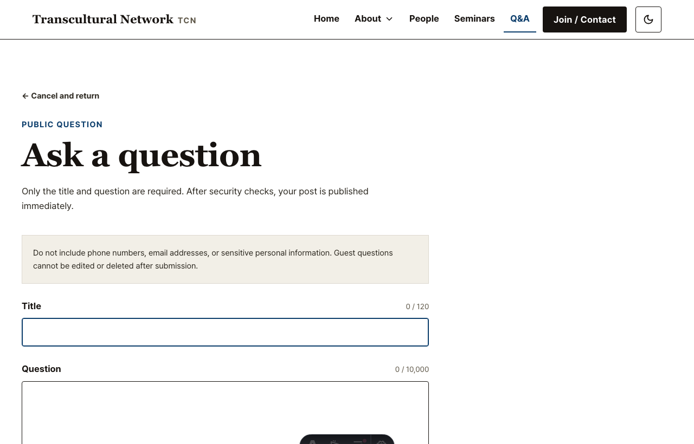
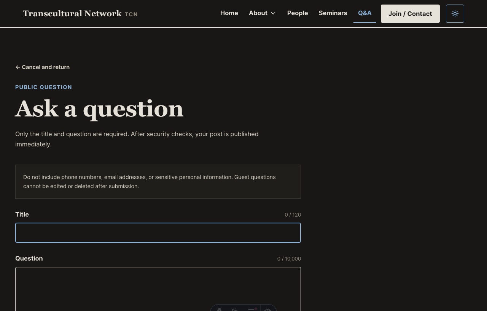
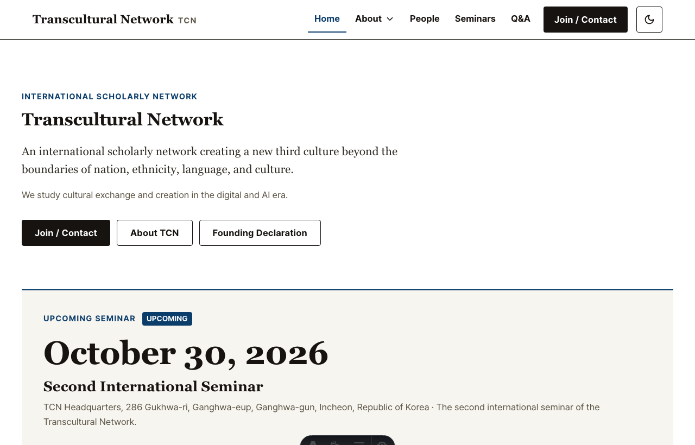
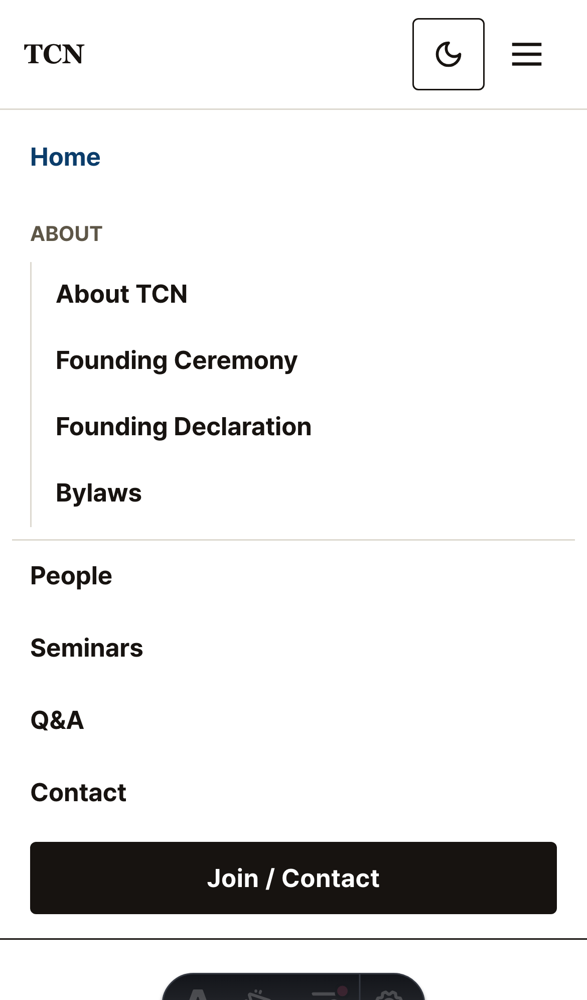
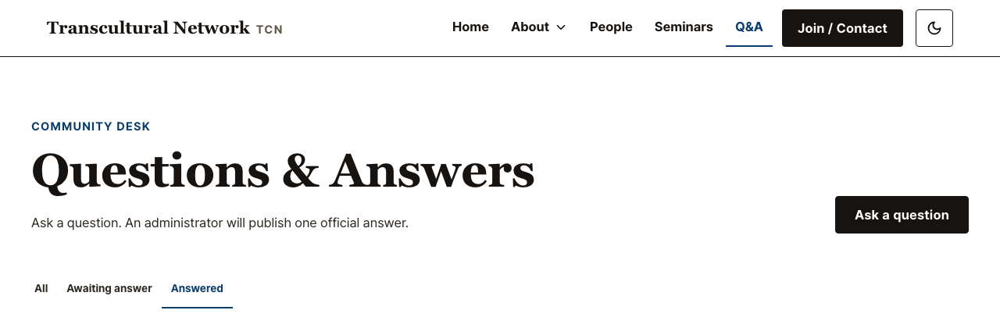
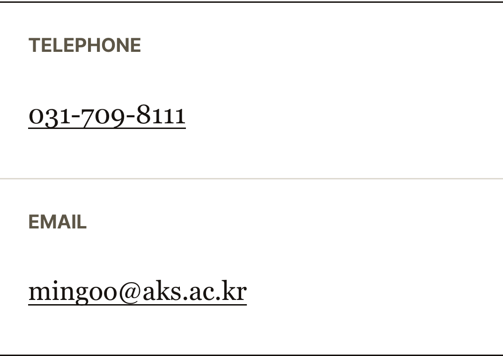

Scope
수정 범위와 디자인 시스템 판단
새 색을 만들지 않고 기존 hairline-strong, ink-soft,
accent, danger 토큰을 재사용했다. 색상 팔레트 변경은 없지만 입력
상태 계약이 기존 문서에 없었으므로 DESIGN.md에 상태별 의미와 복합 상태를
기록했다. 전역 global.css는 수정하지 않았다.
| 파일 | 수정 내용 |
|---|---|
DESIGN.md |
입력 normal·hover·focus·error 색 토큰과 focus/error 복합 상태 계약 추가. |
src/pages/questions/new.astro |
Q&A input/textarea 공용 상태 스타일과 reduced-motion 처리 추가. |
src/components/Header.astro |
메뉴·CTA·테마 버튼 순서 및 active·hover·open 표시 개선. |
src/pages/questions/index.astro |
중복 divider 제거, 탭 hover와 active 상태 구분 강화. |
src/pages/contact.astro |
전화·이메일 링크에 연속 underline과 1px→2px hover 규칙 적용. |
Task 1
Q&A 입력 상태
수정 결과
- 기본 상태: 대비가 충분한
hairline-strong1px border. - Hover:
ink-softborder. - Focus: accent border + inset 1px으로 시각적 2px 단일선.
- 전역 offset outline을 해당 필드에서 제거해 이중 테두리 해소.
-
Error: unfocused danger, focused accent. 오류 문구와
aria-invalid유지. - 색 전환 150ms, reduced-motion에서는 즉시 전환.
검증 결과
- Focus 전후 bounding box 동일.
- Light/dark normal·focus computed color 확인.
- Error→focus 복합 상태 확인.
- iPhone WebKit·Pixel Chromium touch focus 확인.


Task 2
헤더 순서와 상호작용
수정 결과
- 데스크톱 순서: 로고 → 메뉴 → Join / Contact → 테마 버튼.
- DOM 순서와 시각·탭 순서 일치.
- Active: accent 글자 + 예약된 2px 하단선.
- Hover: soft paper 배경 + accent-hover 글자.
- About open/current 상태에 동일한 active 어휘 적용.
검증 결과
- 375 / 895 / 896 / 1151 / 1152 / 1280px 확인.
- Breakpoint 전후 겹침·가로 오버플로 없음.
- Dropdown 열기·Escape 닫기 확인.
- 모바일 tap·스크롤 닫기·44px touch target 확인.


Task 3
Q&A 탭과 divider
수정 결과
- 필터 wrapper와 empty state의 중복
border-y제거. - 비활성 탭에 soft paper hover 배경과 accent-hover 글자 추가.
- 활성 탭은 accent 글자와 2px underline 유지.
- 질문 목록 행 divider와 pagination 구조는 유지.
검증 결과
- 3개 탭 모두 44px 이상 touch target.
- Tap 후 URL status와
aria-current갱신. - Wrapper 상·하 border computed width 0px.
- Light/dark와 가로 스크롤 안정성 확인.

Task 4
Contact 연속 underline
수정 결과
text-decoration-skip-ink: none적용.- Resting underline 1px, hover underline 2px.
- 전역 링크가 아닌 telephone/email 두 링크에만 적용.
tel:,mailto:, 48px touch 영역 유지.
검증 결과
- 숫자·하이픈·@·영문 아래 연속선 확인.
- 375px 및 3개 모바일 프로파일에서 오버플로 없음.
- WebKit과 Chromium computed style 일치.

Verification
실제 검증 결과
Prettier
수정 대상 5개 파일 format check 통과.
Astro check
177개 파일, errors 0 / warnings 0 / hints 0.
Astro build
성공. 기존 500kB 초과 chunk warning만 존재.
Desktop Playwright
10개 시나리오 통과.
Mobile Playwright
3기종 × 세로/가로 × 4 route 통과.
Lighthouse a11y
/, /contact, /questions,
/questions/new 모두 100.
모바일 프로파일: iPhone SE WebKit 320×568 / 568×320, iPhone 13 WebKit
390×664 / 664×390, Pixel 7 Chromium 412×839 / 839×412.
미검증: 실제 iOS/Android 하드웨어, 가상 키보드,
tel:·
mailto: OS 앱 전환. Playwright device emulation 결과와 물리 기기 결과는
구분한다.
보존: 사용자 변경
.codex/config.toml과 기존 계획서
docs/ui-modification-plan-2026-08-11.html은 덮어쓰지 않았다. Commit, push,
PR은 생성하지 않았다.